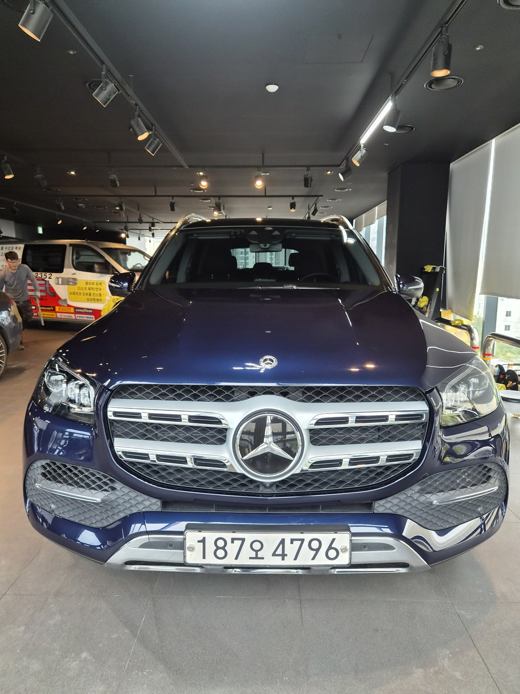
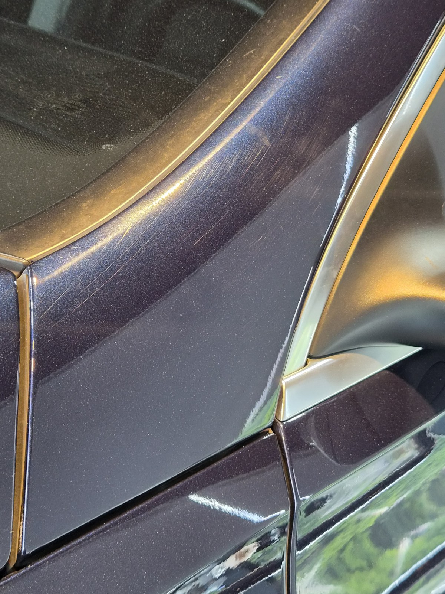
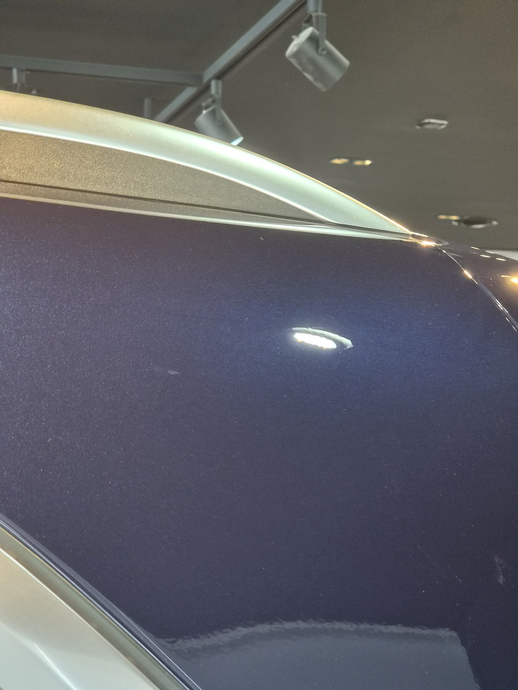
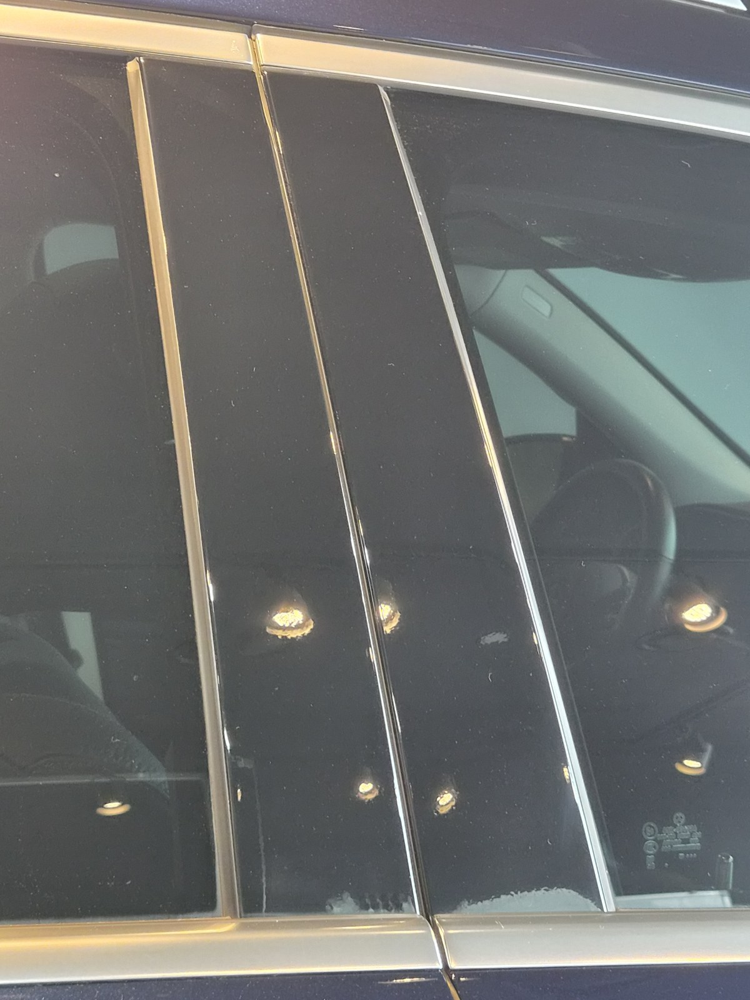
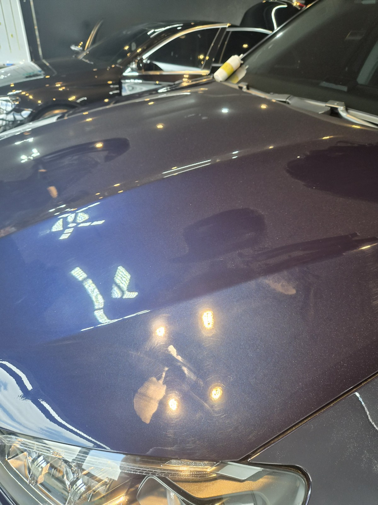
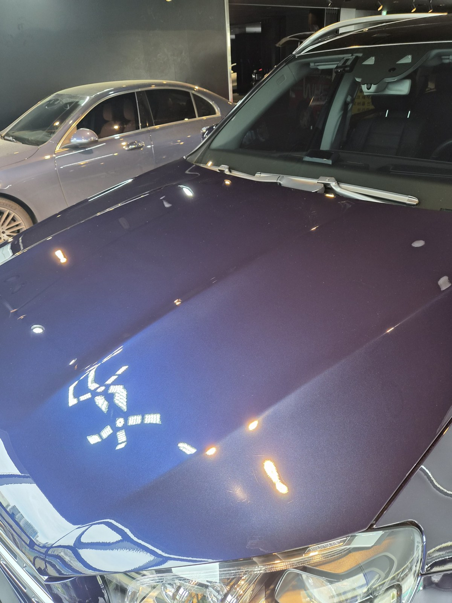

부산 쉴드광택에 들어온 벤츠 GLS400 4MATIC입니다. 다크 블루 메탈릭 바디입니다.
이 차는 광택으로 거미줄 스월과 측면 잔기스를 정리했습니다.

다크 블루 같은 짙은 색은 왜 광택이 필요한가
다크 블루 메탈릭은 검정에 가까운 짙은 색입니다. 그래서 빛을 받으면 스월(거미줄 잔기스)이 그대로 떠오릅니다.
보닛에 조명을 비추니 잔기스가 그물처럼 깔려 있었습니다. 세차하면서 쌓인 전형적인 미세 스월입니다. 멀리선 멀쩡해 보여도, 조명 아래에서는 표면이 거칠게 보입니다.

광택 전. 측면 패널에는 직선 잔기스도 함께 보였습니다
대형 SUV는 광택 차이가 더 크게 보입니다
GLS는 보닛과 도어 패널이 넓은 대형 SUV입니다. 한 번에 보이는 면적이 그만큼 큽니다.
잔기스가 깔려 있으면 넓게 드러나고, 정리하면 그만큼 차이가 크게 보입니다. 큰 패널일수록 광택의 전후가 분명하게 나타납니다.
기술자의 팁
짙은 색은 발색이 깊은 만큼 잔기스도 잘 보이는 색입니다. 표면을 평탄하게 정리해야, 빛이 왜곡 없이 반사되면서 색 본래의 깊이가 살아납니다.
광택은 무조건 세게 깎는 게 정답이 아닙니다
잔기스를 없앤다고 클리어코트(도장면 맨 위 보호막)를 마구 깎으면, 정작 도장 수명을 깎는 일이 됩니다.
그래서 잔기스 깊이를 보고 필요한 만큼만 컴파운드와 패드를 맞춰 깎습니다. 16년간 직접 시공하며 잡아온 감각입니다.
광택 전, 전처리가 9할입니다
표면을 깎기 전에 바탕부터 깨끗해야 합니다.
디테일링 세차로 표면 오염을 걷어내고, 철분 제거제로 박힌 쇳가루를 녹여냅니다. 이 과정을 건너뛰고 패드를 대면, 박힌 오염이 패드에 끌려 오히려 새 잔기스를 만듭니다. 눈에 안 보이는 오염까지 잡는 게 퀄리티의 시작입니다.
마감 후
보닛 위로 헥사 조명이 한 칸 한 칸 또렷하게 맺힙니다.
왜곡 없이 떨어지는 반사가, 표면을 평탄하게 잡았다는 증거입니다. 다크 블루 특유의 짙은 발색이 다시 살아났습니다.



광택 전후, 같은 자리가 어떻게 달라지나
말로 "잔기스를 걷어냈습니다"라고 하는 것보다, 같은 자리를 전후로 비교하는 게 정확합니다.
아래 사진은 작업 전과 작업 후에 같은 보닛 자리를 같은 조명 아래에서 찍은 것입니다.


보닛 — 그물처럼 깔려 있던 스월이 정리됐습니다
광택 후, 이렇게 관리하세요
광택은 표면을 정리하는 작업입니다. 이후 관리에 따라 정리한 상태가 얼마나 가는지 갈립니다.
자동세차(기계세차)는 브러시가 다시 잔기스를 만드니 피하시는 게 좋습니다. 손세차로 관리하시면 정리한 상태가 오래 갑니다. 정리한 표면을 더 오래 지키고 싶으시면, 광택 뒤에 유리막코팅을 올리는 방법도 있습니다.
자주 묻는 질문
Q. 다크 블루 같은 짙은 색은 왜 광택이 필요한가요?
A. 검정에 가까운 짙은 색이라 빛을 받으면 스월이 그대로 떠오릅니다. 멀리선 멀쩡해 보여도 조명 아래에서는 표면이 거칠게 보입니다. 광택으로 표면을 평탄하게 정리해야 색 본래의 깊이가 살아납니다.
Q. 대형 SUV는 광택 차이가 더 크게 보이나요?
A. 보닛과 도어 패널이 넓어 한 번에 보이는 면적이 큽니다. 잔기스가 깔려 있으면 넓게 드러나고, 정리하면 그만큼 차이가 크게 보입니다.
Q. 광택을 하면 도장이 얇아지지 않나요?
A. 필요한 만큼만 깎습니다. 클리어코트 두께를 보고 잔기스 깊이에 맞춰 컴파운드와 패드를 조절합니다. 무조건 세게 깎는 게 정답은 아닙니다.
Q. 광택만 받아도 효과가 오래 가나요?
A. 광택은 표면을 정리하는 작업이라, 이후 관리에 따라 유지 기간이 달라집니다. 자동세차를 피하고 손세차로 관리하면 오래 갑니다. 더 오래 유지하려면 광택 뒤에 유리막코팅을 올리는 방법도 있습니다.
Q. 쉴드광택 위치와 예약은 어떻게 하나요?
A. 부산 남구 유엔로220 1F 쉴드광택입니다. 예약·상담은 010-3384-1850, 대표 최한중이 직접 상담하고 책임 시공합니다.
신차든 출고한 지 된 차든, 시작점이 다르면 결과도 다릅니다.
제품을 직접 만드는 사람이 직접 시공합니다.
부산에서 광택·유리막코팅을 고민 중이시면 편하게 연락 주십시오.
어떤 차를 타냐보다 어떻게 타냐가 중요합니다~!
📞 010-3384-1850 견적 문의쉴드광택 · 부산 남구 유엔로220 1F · 대표 최한중